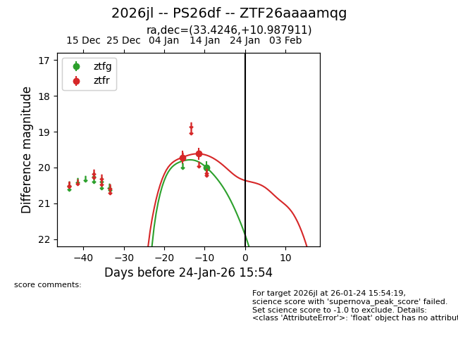
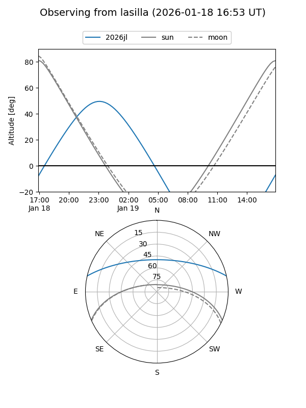
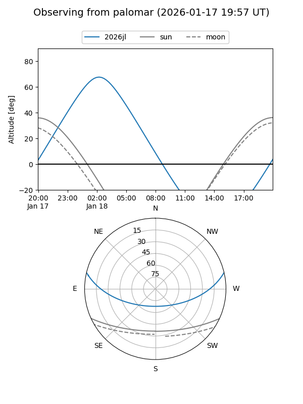
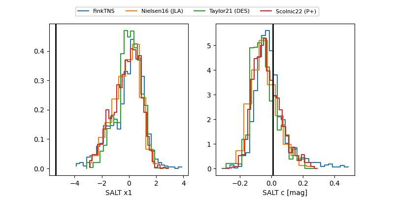

2026jl
Target 2026jl at 2026-01-27 09:11
Aliases and brokers:
FINK: link
Lasair: link
ALeRCE: link
TNS: link
YSE: link
alt names
ZTF26aaaamqg (ztf,fink_ztf)
2026jl (tns,yse)
PS26df (panstarrs)
Coordinates:
equatorial (ra, dec) = 33.4246,+10.98791
equatorial (HMS+DMS) = 02:13:41.90,+10:59:16.48
galactic (l, b) = (153.2902,-46.97744)
Flags:
Photometry:
last ztfg=20.00, ztfr=19.62
1 ztfg, 2 ztfr detections
Lightcurve

Visibility


Additional plots
